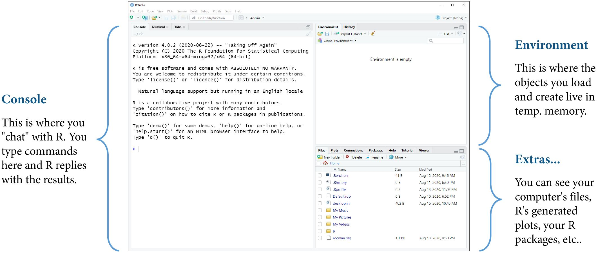

x <- 10
x - 2 * 3 / 4 ^ 5
## [1] 9.994141Intermediate R
for Social Scientists
Workshop Day 1A | 2023-06-05
Jeffrey M. Girard | Pitt Methods

Overview
Instructor

Jeffrey Girard, PhD
affcom.ku.edu/girard
jmgirard@ku.edu
Background
- Assistant Professor, University of Kansas
- Research Postdoc, Carnegie Mellon University
- PhD Student, University of Pittsburgh
Research Areas
- Psychological Assessment
- Affective/Interpersonal Communication
- Applied Statistics and Machine Learning
- Data Science and Software Engineering
Workshop Goals
- This is an intermediate workshop aimed at social scientists with some prior experience in R
- My goal this week is to teach you practical research skills in R (wrangle, visualize, model)
- Through lectures and live coding, you will learn fundamental concepts and skills
- Through hands-on exercises, you will gain confidence in your skills and ability to learn
- You will need to practice to become a pro!
Workshop Roadmap
| DAY 1A | DAY 2A | DAY 3A |
|---|---|---|
| Overview | Summarize | Separating |
| Quarto | Selection | Reshaping |
| Wrangling | Iteration | Joining |
| DAY 1B | DAY 2B | DAY 3A |
| Graphics | Customizing | Stats: GLM |
| Variation | Layouts | Stats: MLM |
| Covariation | Exporting | Consulting |
Workshop Etiquette
Things to Do
- Behave respectfully and with patience
- Ask for help in chat or “raise hand”
- Turn your camera on or off as desired
- Come and go from workshop as needed
Things Not to Do
- Don’t disparage yourself or others
- Don’t stay confused for too long
- Don’t unmute yourself when not talking
- Don’t re-sell the workshop materials
Refresher
R, RStudio, and Projects
Keep all your files together in a project (Files > New Project)
Communicating with R
- The Console is like a chat window with R
- You send a command to R and get a response
- Neither side of the conversation is saved
- An R Script is like an email thread with R
- You send many commands to R all at once
- Only your side of the conversation is saved
- A Quarto Document is like a scrapbook with R
- You can combine code and formatted text
- Both sides of the conversation are saved
Assignment and Naming
- Create named objects in R using
<-
- Object names have some rules in R
- Can only contain letters, digits,
_s, and.s - The first character must be a letter or a
.
- Can only contain letters, digits,
Functions and Packages
- Use functions to perform operations
Strings and Vectors
- Store text data in strings by wrapping it in quotation marks
Factors
- Store categorical data in factors using
factor()
Tibbles
- Tibbles/data frames store tidy, rectangular data in R
library(palmerpenguins)
penguins
## # A tibble: 344 × 8
## species island bill_length_mm bill_depth_mm flipper_length_mm body_mass_g
## <fct> <fct> <dbl> <dbl> <int> <int>
## 1 Adelie Torgersen 39.1 18.7 181 3750
## 2 Adelie Torgersen 39.5 17.4 186 3800
## 3 Adelie Torgersen 40.3 18 195 3250
## 4 Adelie Torgersen NA NA NA NA
## 5 Adelie Torgersen 36.7 19.3 193 3450
## 6 Adelie Torgersen 39.3 20.6 190 3650
## 7 Adelie Torgersen 38.9 17.8 181 3625
## 8 Adelie Torgersen 39.2 19.6 195 4675
## 9 Adelie Torgersen 34.1 18.1 193 3475
## 10 Adelie Torgersen 42 20.2 190 4250
## # ℹ 334 more rows
## # ℹ 2 more variables: sex <fct>, year <int>Data Files
- We can also import a data file (e.g., CSV) into R as a tibble
library(tidyverse)
cereal <- read_csv("cereal.csv")
cereal
## # A tibble: 77 × 8
## name mfr type calories sodium carbo sugars rating
## <chr> <chr> <chr> <dbl> <dbl> <dbl> <dbl> <dbl>
## 1 100% Bran Nabisco cold 70 130 5 6 68.4
## 2 100% Natural Bran Quaker O… cold 120 15 8 8 34.0
## 3 All-Bran Kelloggs cold 70 260 7 5 59.4
## 4 All-Bran with Extra Fiber Kelloggs cold 50 140 8 0 93.7
## 5 Almond Delight Ralston … cold 110 200 14 8 34.4
## 6 Apple Cinnamon Cheerios General … cold 110 180 10.5 10 29.5
## 7 Apple Jacks Kelloggs cold 110 125 11 14 33.2
## 8 Basic 4 General … cold 130 210 18 8 37.0
## 9 Bran Chex Ralston … cold 90 200 15 6 49.1
## 10 Bran Flakes Post cold 90 210 13 5 53.3
## # ℹ 67 more rowsQuarto
Quarto
- Quarto creates dynamic content that combines code, output, and markdown (i.e., formatted text)
- Create articles, reports, posters, slideshows, websites, blogs, and books in many different formats
- Include equations, citations, crossrefs, figure panels, callouts, advanced layouts, and more!
Quarto Live Coding
# Create an Quarto Document
- Open the "File" menu in RStudio
- Select the "New File" option
- Select the "Quarto Document..." option
- Keep the defaults (HTML) and hit "Create"
- Open the "File" menu
- Select the "Save" option
- Note that it defaults to the project folder
- Give it a name like "Day 1 Notes" (or whatever)
- Note that the file extension is .qmd
# Render the boilerplate content
- To see how it works, read the boilerplate content
- Now click the "Render" button to create the output file
- A preview of the output will appear in the Viewer tab
- In the File tab, we see a new .html file was created
- We can share this .html file with others
- It includes all the formatted text, code, and R results
# Remove the boilerplate content
- The top part of the document is called the "Header"
- You can change the title but keep it in quotes
- Highlight and delete everything below the header
- You can delete the header too, but I find it useful
# Add an R Chunk
- Option 1: Click the green box with C and a plus sign icon (top-right)
- Option 2: Ctrl+Alt+I (Win) or Cmd+Option+I (Mac)
- Option 3: Type out ```{r} then new line and ``` yourself
# Adding code to the chunk
- Anything you put inside the "fences" (i.e., ```) will be treated as R code
- The chunk operates like a mini console
- Try doing some calculations in the chunk and hit the green arrow
- The answer appears right below the chunk!
- If we save and render the document, it appears in the output tooMarkdown
- Markdown is a simple text-to-HTML conversion language used by Quarto, GitHub, Obsidian, etc.
- It will allow us to add formatted text, images, links, lists, etc. to our Quarto documents
- Quarto will treat all text that is not in a code chunk as markdown
Markdown Live Coding
# Formatting
- *italics* and **bold** and ***italics and bold***
- superscript^2^ and subscript~2~
- ~~strikethrough~~
- `verbatim code`
# Headings
- # Header 1
- ## Header 2
- ### Header 3
# Links
- <https://quarto.org>
- [Quarto](https://quarto.org)
# Images
- 
# Lists
- * Unordered list
- + sub-item
- + sub-item
- 1. Ordered list
- 2. Item 2Basic Data Wrangling
Basic data wrangling verbs
- tidyverse provides tools for wrangling tibbles
- These functions are named after verbs
- So if you name your objects after nouns…
- …your code becomes easier to read
| Noun(noun) ❌ | Verb(noun) ✔️ |
|---|---|
blender(fruit) |
blend(fruit) |
screwdriver(screw) |
drive(screw) |
boxcutter(box) |
cut(box) |
Wrangling columns
- Select retains only certain columns in a tibble (and can reorder them)
select(X, KEEP, -DROP)
- Mutate transforms columns in a tibble or adds new columns to it
mutate(X, NEW = OLD / 5)
Select Live Coding
# SETUP: Load package and inspect example tibble
library(tidyverse) # includes the dplyr package
starwars
# ==============================================================================
# USECASE: Retain only the specified variables
sw <- select(starwars, name)
sw
sw <- select(starwars, name, sex, species)
sw
# ==============================================================================
# PITFALL: Don't forget to save the change with assignment
select(starwars, name, sex, species)
starwars # still includes all variables
# ==============================================================================
# USECASE: Retain all variables between two variables
sw <- select(starwars, name, hair_color:eye_color)
sw
# ==============================================================================
# USECASE: Retain all variables except the specified ones
sw <- select(starwars, -sex, -species)
sw
sw <- select(starwars, -c(sex, species))
sw
sw <- select(starwars, -c(hair_color:starships))
swMutate Live Coding
# SETUP: Create example tibble
patients <- tibble(
id = c("S1", "S2", "S3"),
feet = c(6, 5, 5),
inches = c(1, 7, 2),
pounds = c(176.3, 124.9, 162.6)
)
patients
# ==============================================================================
# USECASE: Add one or more variables
p2 <- mutate(patients, sex = c("M", "F", "F"))
p2
ages <- c(32, 41, 29)
p2 <- mutate(patients, ages = ages)
p2
p2 <- mutate(
patients,
sex = c("M", "F", "F"),
ages = ages
)
p2
# ==============================================================================
# USECASE: Compute variables
p2 <- mutate(patients, height = feet + inches / 12)
p2
p2 <- mutate(patients, ln_pounds = log(pounds))
p2
# ==============================================================================
# USECASE: Overwrite variables
patients <- mutate(patients, height = height / 3.281)
patients
# ==============================================================================
# USECASE: Duplicate variables
p2 <- mutate(patients, weight = pounds)
p2 # both weight and pounds existWrangling rows
- Arrange sorts the rows in a tibble based on their values
arrange(X, VAR_SORT_UP)
- Filter retains only certain rows in a tibble based on criteria
filter(X, NUMBER > 0)filter(X, STRING == "A")
Arrange Live Coding
# USECASE: Sort observations by a variable
starwars
sw <- arrange(starwars, height)
sw # sorted by height, ascending
sw <- arrange(starwars, name)
sw # sorted by name, alphabetically
# ==============================================================================
# USECASE: Sort observations by a variable, in reverse order
sw <- arrange(starwars, desc(height))
sw # sorted by height, descending
sw <- arrange(starwars, desc(name))
sw # sorted by name, reverse-alphabetically
# ==============================================================================
# USECASE: Sort observations by multiple variables
sw <- arrange(starwars, hair_color, mass)
sw # sorted by hair_color, then ties broken by massFilter Live Coding
# USECASE: Retain only observations that meet a criterion
sw <- filter(starwars, mass > 100)
sw # only observations with mass greater than 100
sw <- filter(starwars, mass <= 100)
sw # only observations with mass less than or equal to 100
sw <- filter(starwars, species == "Human")
sw # only observations with species equal to Human
sw <- filter(starwars, species != "Human")
sw # only observations with species not equal to Human
# ==============================================================================
# PITFALL: Don't try to use a single = for testing equality
sw <- filter(starwars, height = 150) # error
sw <- filter(starwars, height == 150) # correct
sw
# ==============================================================================
# PITFALL: Don't forget that R is case-sensitive
sw <- filter(starwars, species == "human")
sw # no observations left (because it should be Human)
# ==============================================================================
# USECASE: Retain only observations that meet complex criteria
sw <- filter(starwars, mass > 100 & height > 200)
sw # only observations with mass over 100 AND height over 200
sw <- filter(starwars, height < 100 | hair_color == "none")
sw # only observations with height under 100 OR hair_color equal to none
# ==============================================================================
# PITFALL: Don't forget to complete both conditions
sw <- filter(starwars, mass > 100 & < 200) # error
sw <- filter(starwars, mass > 100 & mass < 200) # correct
sw
# ==============================================================================
# PITFALL: Don't try to equate a string to a vector
sw <- filter(starwars, species == c("Human", "Droid")) # error
sw <- filter(starwars, species %in% c("Human", "Droid")) # correct
swFilter Cheatsheet
| Symbol | Description | Num | Chr |
|---|---|---|---|
< |
Less than | Yes | No |
<= |
Less than or equal to | Yes | No |
> |
More than | Yes | No |
>= |
More than or equal to | Yes | No |
== |
Equal to | Yes | Yes |
!= |
Not equal to | Yes | Yes |
%in% |
Found in | Yes | Yes |
& |
Logical And | Yes | Yes |
| |
Logical Or | Yes | Yes |
Pipes and Pipelines
Pipes and Pipelines
- How can we do multiple operations to an object?
x <- 10x2 <- sqrt(x)x3 <- round(x2)
- This works but is cumbersome and error-prone
- A better approach is to use pipes and pipelines
x3 <- 10 |> sqrt() |> round()
- I like to read
|>as “and then…”- “Take 10 and then sqrt() and then round()”
Pipes Live Coding
# SETUP: Enable the pipe operator shortcut
# Tools > Global Options... > Code tab > Check "Use Native Pipe Operator"
# Type out |> or press Ctrl+Shift+M (Win) / Cmd+Shift+M (Mac)
# ==============================================================================
# LESSON: The pipe pushes objects to a function as its first argument
# TEMPLATE: x |> function_name() is the same as function_name(x)
x <- 10
y <- sqrt(x)
y
y <- x |> sqrt()
y
# ==============================================================================
# PITFALL: Don't forget to remove the object from the function call
x |> sqrt(x) # wrong
x |> sqrt() # correct
# ==============================================================================
# USECASE: You can still use arguments when piping
z <- round(3.14, digits = 1)
z
z <- 3.14 |> round(digits = 1)
z
# ==============================================================================
# USECASE: Pipes are useful with tibbles and wrangling verbs
starwars
sw <- select(starwars, name, species, height)
sw
sw <- starwars |> select(name, species, height)
sw
# ==============================================================================
# PITFALL: Don't add a pipe without a step after it
sw <- starwars |> select(name, species, height) |> # errorPipelines Live Coding
# USECASE: You can chain multiple pipes together to make a pipeline
x <- 10 |> sqrt() |> round()
x
# ==============================================================================
# TIP: If you want to see the output of a pipeline, you can pipe to print()
x <- 10 |> sqrt() |> round() |> print()
# ==============================================================================
# TIP: To make your pipelines more readable, move each step to a new line
x <-
10 |>
sqrt() |>
round() |>
print()
# ==============================================================================
# PITFALL: Don't put the pipe at the beginning of a line, though
x <-
10
|> sqrt()
|> round()
|> print() # error
# ==============================================================================
# USECASE: Chain together a series of verbs to flexibly wrangle data
tallones <-
starwars |>
select(name, species, height) |>
mutate(height_ft = height / 30.48) |>
filter(height_ft > 7) |>
arrange(desc(height_ft)) |>
print()